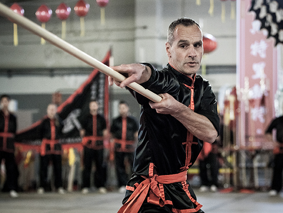

Info
Photographer and filmdirector Wim Wenders once said: 'A photograph does not freeze time, as people commonly think, but it proves how unstoppable and perpetual time is'. No more time to lose, I realised in 1998 when I started to explore photography. Inspired by trips to Indonesia and Venezuela I began to document travels from Cuba to Japan and from New York to Rome. In 1996/1997 I lived in Thessaloniki on the Northern Greek mainland and since then, the city became a recurring subject for me and my camera. About half of the photos in this portfolio date from the analogue era. I always preferred black and white film, mainly because I was in control of the entire process, from film development to printing. But since I switched to the digital camera in 2009, I have been tempted to shoot in color as well.
The images in this portfolio were never planned in advance but taken from a spontaneous awareness that beauty lies in everyday things. Every single photograph contains an untold story, like a snapshot summarizing a broader context. The search for the decisive moment that best reflects my interpretation of the situation is what I find most fascinating. But it's up to the viewer to come up with his own interpretation. The result is more a personal website rather than a commercial one, a collection of my work rather than an online store.
Bart Rijnbout (1969) lives in Maastricht, The Netherlands. He has a passion for martial arts, photography, travelling, jazz records and exploring the trumpet.
